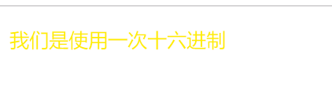
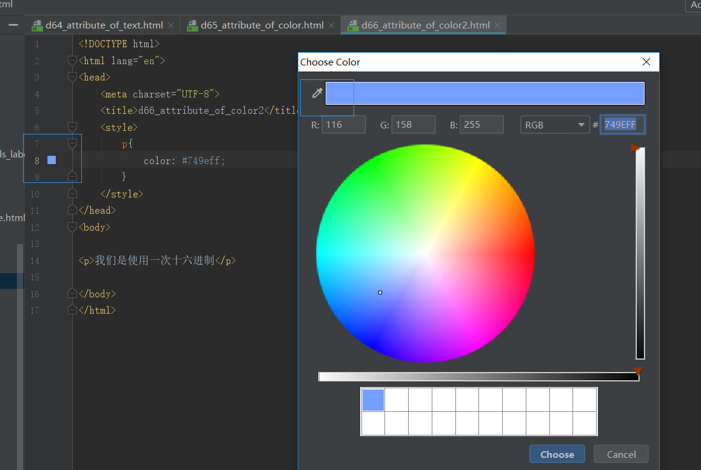
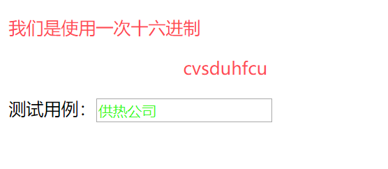

原文连接:https://www.cnblogs.com/ruigege0000/p/11094631.html
一、颜色控制属性（上接连载15）
（4）十六进制
在前端开发中通过十六进制来表示颜色，其实本质就是RGB，十六进制中是通过每两位表示一个颜色。
例如：#FFEE00，其中FF代表的是R，EE代表的G，00代表的就是B
注：十六进制和十进制的转换公示，请自行百度
（5）在CSS中只要是十六进制的颜色每两位都是一样的，那么就可以简写为一位。
例如：#FFEE00可以写为#FE0
注：如果当前颜色对应的两位数字不一样，那么不能简写；如果两位相同的数字不是属于同一种颜色，也不能简写
<head>
<meta charset="UTF-8">
<title>d66_attribute_of_color2</title>
<style>
p{
color: #ff4b54;
}
</style>
</head>
<body>
<p>我们是使用一次十六进制</p>
</body>

我们使用这个属性的时候不可能把每个颜色都记住，因此在webstorm中我们提供了取色器进行选择。

二、标签选择器
1.标签选择器定义：根据指定的标签名称，在当前界面中找到所有的该名称的标签然后设置属性。
2.格式：
标签名称｛
属性：值；
｝
3.注意点：
（1）标签选择器选中的是当前界面中所有的标签，而不能单独选中其中某一个标签。
（2）标签选择器无论标签藏得多深都能选中
（3）只要是HTML中的标签就可以作为标签选择器（h/a/img/ul/ol/dl/input.....各种标签）
<head>
<meta charset="UTF-8">
<title>d66_attribute_of_color2</title>
<style>
p{
color: #ff4b54;
}
input{
color: #37fa1e;
}
</style>
</head>
<body>
<p>我们是使用一次十六进制</p>
<ul>
<ol>
<ul>
<ol><p>cvsduhfcu</p></ol>
</ul>
</ol>
</ul>
测试用例：<input type="text">
</body>

三、源码：d66&67_attribute_of_color2&label_selector
地址:
https://github.com/ruigege66/HTML_learning/blob/master/d66%2667_attribute_of_color2%26label_selector
2.CSDN：https://blog.csdn.net/weixin_44630050（心悦君兮君不知-睿）
3.博客园：https://www.cnblogs.com/ruigege0000/
4.欢迎关注微信公众号：傅里叶变换，后台回复“礼包”获取Java大数据学习视频礼包